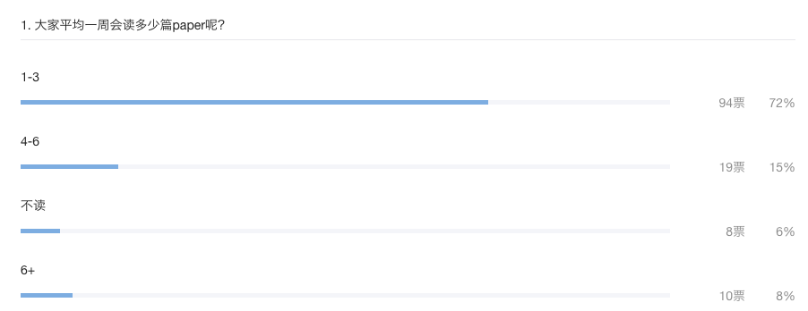
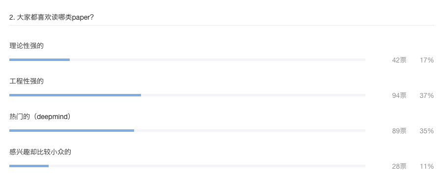
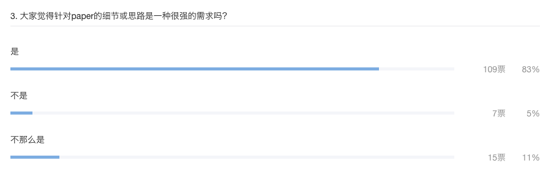
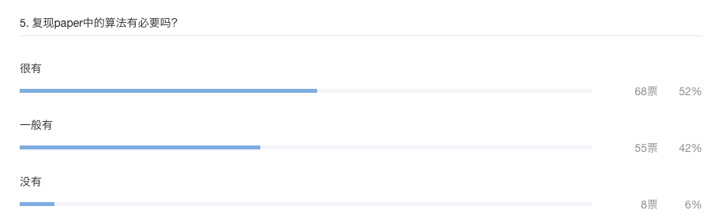
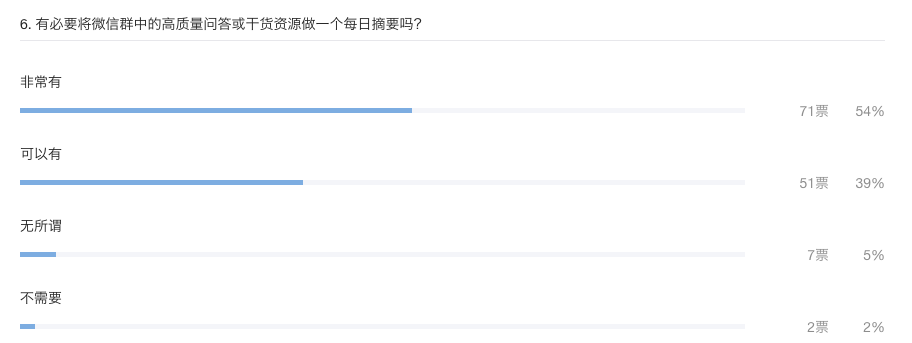
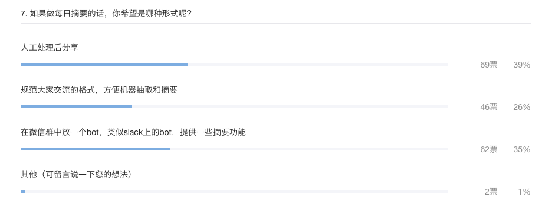
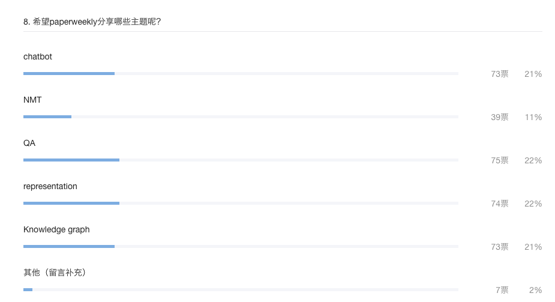

参与投票131人，远超我个人的预期，证明了发红包是一个非常有效的手段，感谢各位的参与。

从第一个问题的回答来看，群里的童鞋基本上都喜欢读paper，并且大多数一周内可以读1-3篇，更有甚者可以读到6篇以上。关于读paper，以及从最开始做paperweekly，也是受了Ng一次采访内容的启发，他大概的意思是说，每天坚持读篇paper是一种长期投资，坚持做一年、两年之后会有显著地提高。（虽然不确定这话是不是Ng本人说的，但我比较认同这个观点）

第二个问题是关于paper类型的，是一个多选题。群里的童鞋有的是学生，有的是工业界的朋友，有的大厂的工程师，有的是创业公司的大拿，不同的背景决定了导向不同。从结果分布来看，工程性强、热门的paper更受欢迎，这个结果可以也比较好理解，毕竟大众化的东西是更受大家欢迎，工程性强的文章一般来说可操作性都比较强，适合复现，并且可以有选择地应用在生产环境中；热门的文章是大家热议的话题，AlphaGo热炒那会，出门不聊几句增强学习都不好意思和人打招呼，甚至这个PR行为带动了一大批人开始学习下围棋，热门、话题性是是媒体感兴趣的，也是大众喜欢津津乐道的；理论性强的paper通常来说不好读，因为很难，需要很深的基础在那儿，不是一句、两句说得清的，但正是这些理论性强的paper真正地推动着AI在往前走；每个人的兴趣点可能都不是很相同，所以有28个童鞋选择了最后一个选项，也符合小众这个词的特点。
chatbot是当下可能最火的方向之一，但说句实话，10年前paper提出的方法可能在现在的系统中仍然是非常好用的，记得微博上看到过一个人说用正则可以解决大多数的问题，仔细想想rule-based是一个多么神通广大的事情啊。既然rule-based这么好，干嘛还研究那么多新东西、新概念呢？不就是因为人工智能太偏重于人工一词，离智能太远，离智障太近嘛。我一直是这么看待paper这个事儿的，paper针对的可能不是当下的问题，而是未来的问题，但不意味着当下的paper对于当下的问题没有参考和借鉴的意义。paperweekly的一个初衷是希望大家可以通过简单、清晰地描述来看看某一篇或者某几篇paper到底解决了什么问题，用了什么方法，结果如何，当然结果的可信度是另外一回事，但终究是会有启发的。

这个问题少打两个字，但是感觉根据上下文大家应该是理解了我提的问题。我想了解，到底paperweekly写的文章有没有真正地解决了一点点需求，或者给大家带来那么一点点启发。答案告诉了我，确实有，某些细节或者思路确实很有借鉴意义，这件事情值得做。谢谢。

这是一个多选题，初衷是想了解下哪种方式或者哪几种方式可以让交流变得更加高效率。毫无疑问，微信群是最多的答案，说句实话，微信群排第一是因为大家对微信的依赖强，黏性大，bbs排第二，其实bbs是更加好的讨论方式，但是黏性很差，讨论起来操作会麻烦一些，所以我这边有个非常naive的想法，就是想将bbs和微信群打通，群里有几个技术大牛也愿意一起来做这件事情，希望可以有一个方便大家的东西出来。

复现别人paper这个事儿，我个人会选一般有。原因如下：1、首先paper的结果可能没有那么地好，只是说写的或者选的比较好而已；2、paper里的算法不见得适合你的问题；3、paper中的实验在实现过程中可能有很多的trick，并没有写明在paper中，这都是一个又一个的坑啊；4、有些paper有开源的code，可以拿来跑一跑看看效果再说。

这个答案也是我预想之中的，摘要就是为了解决信息过载问题的。群里每天会产生一定数量的消息（不是很多其实），但没有赶上实时聊天的话，很容易错过一些精彩的对话或者干货分享。从这个角度来看，做digest这件事情就显得很有意义了。关于如何做，群里之前也有过不错的讨论，我也尝试标注了下数据，感觉难度不小，现在的想法是，我每天晚上花点时间手工摘要出来，分享在bbs和群里。（日后有机会可以将这个事情自动化）

这个问题的结果基本上和我上面的想法吻合了。

目前paperweekly运营团队里有四个活跃的小组，分别是chatbot、NMT、QA和representation，每个组每周负责出一期文章，包括3-5篇paper，KG这个组建立了，但是一直不够活跃，需要大牛的加入，来写KG方面的文章。
投票的结果和总结基本是这样的情况，投票可能设计的不科学也有些仓促，但基本达到了预期的目的，得到了充分的反馈，这里感谢各位的支持。谢谢大家！